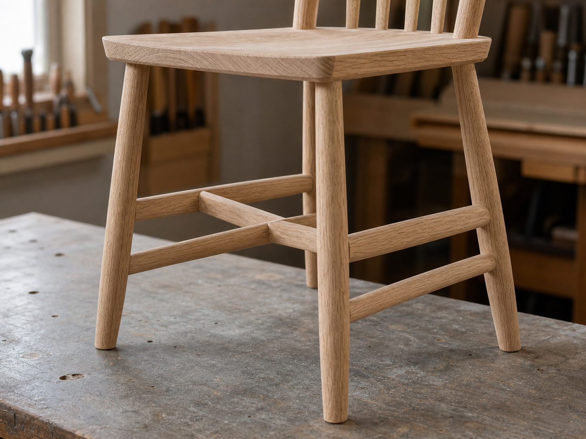

의자 가로대가 흔들림을 줄이는 방식

의자를 볼 때 사람의 눈은 대개 등받이와 좌판, 전체 실루엣을 먼저 봅니다. 하지만 의자가 오래 안정적으로 서 있는지는 좌판 아래의 작은 부재들이 크게 좌우합니다. 앞다리와 뒷다리를 잇는 옆 가로대, 좌우 다리를 묶는 앞 가로대, 그리고 그 사이를 다시 연결하는 중앙 가로대는 의자 하부의 움직임을 조용히 정리합니다.
이 부재를 영어권 가구 용어로는 스트레처(stretcher)라고 부릅니다. 이름만 보면 단순히 다리 사이를 벌려 놓는 막대처럼 들리지만, 실제 역할은 조금 더 섬세합니다. 다리의 위치를 유지하고, 반복되는 앉고 일어서는 힘을 여러 연결부로 나누며, 의자가 옆으로 비틀릴 때 생기는 유격을 줄이는 데 관여합니다.
의자는 정적인 물건처럼 보여도 계속 힘을 받습니다
테이블은 위에서 아래로 누르는 힘이 비교적 분명합니다. 의자는 다릅니다. 사람은 의자에 정확히 수직으로만 앉지 않습니다. 앉는 순간 뒤로 밀리고, 일어설 때 앞다리에 힘이 쏠리며, 몸을 돌릴 때 한쪽 다리와 등받이 쪽으로 비틀림이 생깁니다. 바닥이 조금만 고르지 않아도 네 다리가 동시에 같은 힘을 받지 않습니다.
그래서 의자의 다리는 단순한 받침대가 아니라 서로 관계를 맺는 구조여야 합니다. 다리 하나가 하중을 받는 동안 다른 다리와 좌판, 등받이 부재가 그 힘을 함께 나누어야 합니다. 가로대는 이 관계를 눈에 보이는 방식으로 만들어 주는 하부 연결 부재입니다.
가로대는 다리 네 개를 하나의 하부 프레임으로 묶습니다
다리만 좌판에 꽂힌 의자는 간결해 보일 수 있지만, 다리와 좌판의 접합부가 대부분의 힘을 감당해야 합니다. 반대로 다리 사이에 가로대가 들어가면 각 다리는 좌판뿐 아니라 이웃한 다리와도 연결됩니다. 의자 하부가 느슨한 네 개의 막대가 아니라 하나의 작은 프레임처럼 작동하기 시작합니다.
특히 앞뒤 방향으로 흔들리는 힘은 옆 가로대를 통해 나뉘고, 좌우 방향의 벌어짐은 앞 가로대와 뒤쪽 연결 부재가 함께 잡아 줍니다. 중앙에 한 번 더 가로대를 잇는 H형 구조는 양쪽 옆 가로대의 상대적 움직임을 줄이는 데 도움이 됩니다. 다만 가로대가 있다고 해서 모든 흔들림이 자동으로 해결되는 것은 아닙니다. 결구의 깊이, 접착면, 다리의 각도, 좌판과 다리의 연결 품질이 함께 맞아야 합니다.
낮은 곳의 작은 부재가 큰 지렛대를 줄입니다
의자 다리는 길고 가늘기 때문에 위쪽에서 작은 옆힘을 받아도 아래쪽에서는 지렛대처럼 크게 느껴질 수 있습니다. 가로대는 다리 중간 또는 하부에서 그 움직임을 서로 묶어 줍니다. 다리 끝이 각자 따로 움직이려는 성향을 줄이고, 힘이 한 결구에만 몰리지 않도록 도와줍니다.
USDA Forest Products Laboratory의 Wood Handbook은 목재 연결부의 성능을 부재의 강도만이 아니라 하중 방향, 접촉면, 체결 방식, 반복 하중과 함께 보아야 한다고 설명합니다. 의자 가로대도 같은 관점에서 이해할 수 있습니다. 막대 하나의 굵기보다 중요한 것은 그 막대가 어떤 방향의 힘을 어느 접합부로 전달하는지입니다.
장부와 접착은 가로대의 역할을 완성합니다
가로대가 의자 다리에 단단히 물리지 않으면 오히려 삐걱거리는 원인이 됩니다. 겉으로는 부재가 붙어 있어도 장부가 얕거나, 구멍과 장부 사이에 유격이 있거나, 접착면이 충분하지 않으면 반복 사용 중에 작은 움직임이 커집니다. 의자의 흔들림은 대개 한 번의 큰 파손보다 작은 틈이 조금씩 커지는 방식으로 시작됩니다.
좋은 가로대는 다리에 단순히 붙어 있는 막대가 아니라, 다리 안으로 들어가 힘을 주고받는 부재입니다. 원형 장부든 사각 장부든 핵심은 하중을 받는 면이 충분하고, 장부의 어깨가 다리 표면에 고르게 닿으며, 가로대의 결 방향이 반복 하중을 견디기에 알맞게 놓이는 것입니다. 그래서 가로대의 끝 처리는 의자 외관보다 더 중요한 제작 품질입니다.
윈저 체어의 하부 구조는 좋은 참고가 됩니다
전통적인 윈저 체어에서는 좌판에 다리와 등받이 부재가 끼워지고, 하부에는 앞뒤 다리를 잇는 가로대와 가운데 가로대가 들어가는 경우가 많습니다. 현대의 모든 의자가 윈저 체어처럼 만들어지는 것은 아니지만, 좌판 아래에서 다리와 가로대가 서로 긴장 관계를 이루며 하부를 안정시키는 방식은 배울 점이 큽니다.
의자 제작자 Christopher Schwarz가 쓴 The Stick Chair Book 같은 현대 의자 제작 자료도 다리 각도, 장부, 좌판, 하부 연결을 따로 보지 않고 하나의 의자 구조로 다룹니다. 가로대는 독립된 장식선이 아니라 다리 각도와 좌판 접합, 사용자의 움직임 사이에서 균형을 잡는 부재입니다.
발받침처럼 보일 때도 구조와 사용성을 함께 봅니다
식탁 의자나 스툴의 낮은 가로대는 사용자가 자연스럽게 발을 올리는 곳이 되기도 합니다. 이때 가로대는 구조 부재이면서 동시에 몸이 닿는 사용 부재가 됩니다. 너무 앞에 있으면 앉고 일어설 때 발에 걸리고, 너무 낮으면 발받침으로 쓰기 어렵고, 너무 가늘면 압력이 발바닥에 좁게 집중됩니다.
반대로 발을 올리기 편한 위치에 있더라도 그 가로대가 구조적으로 무리한 하중을 받도록 설계되면 오래 쓰기 어렵습니다. 발이 닿는 부위는 모서리를 부드럽게 다듬고 마감 내구성을 고려해야 하며, 장부와 다리 연결부는 반복 압력을 견딜 수 있어야 합니다. 사용성을 위해 둔 위치가 구조를 해치지 않아야 좋은 가로대입니다.
가로대가 없는 의자도 가능하지만 조건이 다릅니다
현대적인 성형 합판 의자, 금속 프레임 의자, 두꺼운 좌판에 다리를 깊게 결합한 의자는 가로대 없이도 충분한 안정성을 얻을 수 있습니다. 즉 가로대는 모든 의자의 필수 장식이 아니라, 특정 구조에서 하부를 안정시키는 한 가지 방법입니다. 중요한 것은 가로대의 유무보다 힘의 길이 분명한가입니다.
가로대가 없는 의자라면 좌판과 다리의 접합부가 더 많은 일을 해야 합니다. 다리의 벌어짐 각도, 결합 깊이, 보강판이나 금속 브래킷의 역할, 좌판 재료의 강성을 함께 봐야 합니다. 반대로 가로대가 있는 의자라면 그 부재가 실제로 힘을 나누는지, 아니면 얕게 붙은 장식선에 그치는지를 확인해야 합니다.
좋은 의자는 아래쪽에서도 설득력이 있습니다
의자를 살펴볼 때 좌판 아래를 한 번 들여다보면 제작자의 생각이 드러납니다. 가로대가 다리의 어느 높이에 놓였는지, 좌우가 같은 기준으로 맞는지, 장부 주변이 벌어지거나 갈라진 흔적은 없는지, 발이 닿을 만한 곳의 모서리가 부드러운지 확인할 수 있습니다. 보이지 않는 하부가 단정한 의자는 사용 중에도 신뢰감을 줍니다.
목간이 의자 구조를 볼 때 중요하게 생각하는 점도 여기에 있습니다. 가느다란 부재 하나를 더하는 일이 아니라, 사람이 앉고 일어나는 힘이 어디로 흐르는지 먼저 보는 일입니다. 가로대는 의자의 아래쪽에서 그 힘의 길을 조용히 드러냅니다. 그래서 잘 만든 의자는 등받이의 선뿐 아니라 좌판 아래의 작은 연결에서도 안정감이 느껴집니다.